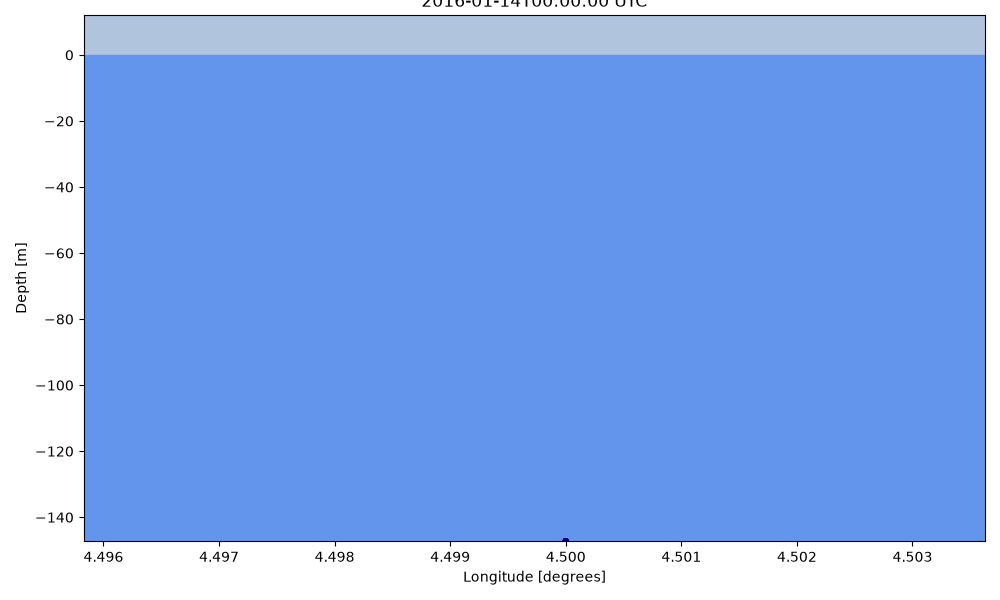
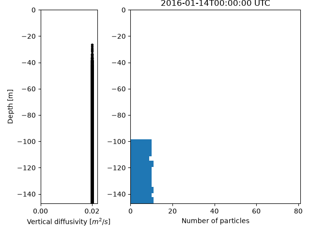
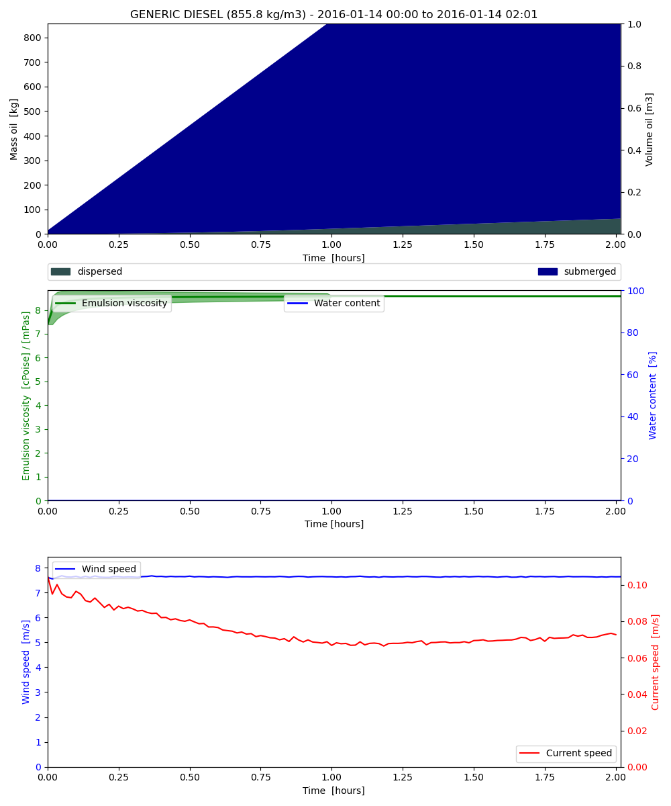

Note
Go to the end to download the full example code.
Seafloor oil spill
from datetime import timedelta
from opendrift import test_data_folder as tdf
from opendrift.readers import reader_netCDF_CF_generic
from opendrift.models.openoil import OpenOil
o = OpenOil(loglevel=20) # Set loglevel to 0 for debug information
# Norkyst
reader_norkyst = reader_netCDF_CF_generic.Reader(tdf + '14Jan2016_NorKyst_z_3d/NorKyst-800m_ZDEPTHS_his_00_3Dsubset.nc')
#reader_norkyst = reader_netCDF_CF_generic.Reader('https://thredds.met.no/thredds/dodsC/fou-hi/norkystv3_800m_m00_be')
o.add_reader([reader_norkyst])
o.set_config('environment:fallback:x_wind', 3)
o.set_config('environment:fallback:y_wind', 7)
o.set_config('drift:vertical_mixing', True)
13:04:50 INFO opendrift:568: OpenDriftSimulation initialised (version 1.14.9 / v1.14.9-15-gc6011b4)
13:04:50 INFO opendrift.readers:64: Opening file with xr.open_dataset
13:04:50 INFO opendrift.readers.reader_netCDF_CF_generic:340: Detected dimensions: {'x': 'X', 'y': 'Y', 'z': 'depth', 'time': 'time'}
Setting the range of droplet sizes for the seafloor release
o.set_config('seed:droplet_size_distribution','uniform')
o.set_config('seed:droplet_diameter_min_subsea', 0.0001)
o.set_config('seed:droplet_diameter_max_subsea', 0.0005)
# 'normal' and 'lognormal' distributions can also be specified
# o.set_config('seed:droplet_size_distribution','lognormal')
# o.set_config('seed:droplet_diameter_mu',0.001) # 1 mm
# o.set_config('seed:droplet_diameter_sigma',0.0008) # 0.8 mm
Seeding some particles
time = [reader_norkyst.start_time,
reader_norkyst.start_time + timedelta(hours=1)]
o.seed_elements(lon=4.5, lat=62.0, z='seafloor', radius=0, number=3000,
time=time, oil_type='GENERIC DIESEL')
13:04:50 INFO opendrift.models.openoil.openoil:1660: Using uniform droplet size distribution between 0.0001 and 0.0005 m for elements seeded below sea surface.
13:04:50 INFO opendrift.models.openoil.adios.dirjs:86: Querying ADIOS database for oil: GENERIC DIESEL
13:04:50 INFO opendrift.models.openoil.openoil:1726: Using density 855.84763 and viscosity 8.644570579524623e-06 of oiltype GENERIC DIESEL
13:04:50 INFO opendrift.models.basemodel.environment:203: Adding a global landmask from GSHHG
13:04:55 INFO opendrift.models.basemodel.environment:227: Fallback values will be used for the following variables which have no readers:
13:04:55 INFO opendrift.models.basemodel.environment:230: x_wind: 3.000000
13:04:55 INFO opendrift.models.basemodel.environment:230: y_wind: 7.000000
13:04:55 INFO opendrift.models.basemodel.environment:230: upward_sea_water_velocity: 0.000000
13:04:55 INFO opendrift.models.basemodel.environment:230: sea_surface_wave_significant_height: 0.000000
13:04:55 INFO opendrift.models.basemodel.environment:230: sea_surface_wave_stokes_drift_x_velocity: 0.000000
13:04:55 INFO opendrift.models.basemodel.environment:230: sea_surface_wave_stokes_drift_y_velocity: 0.000000
13:04:55 INFO opendrift.models.basemodel.environment:230: sea_surface_wave_period_at_variance_spectral_density_maximum: 0.000000
13:04:55 INFO opendrift.models.basemodel.environment:230: sea_surface_wave_mean_period_from_variance_spectral_density_second_frequency_moment: 0.000000
13:04:55 INFO opendrift.models.basemodel.environment:230: sea_ice_area_fraction: 0.000000
13:04:55 INFO opendrift.models.basemodel.environment:230: sea_ice_x_velocity: 0.000000
13:04:55 INFO opendrift.models.basemodel.environment:230: sea_ice_y_velocity: 0.000000
13:04:55 INFO opendrift.models.basemodel.environment:230: horizontal_diffusivity: 0.000000
13:04:55 INFO opendrift.models.basemodel.environment:230: ocean_vertical_diffusivity: 0.020000
13:04:55 INFO opendrift.models.basemodel.environment:230: ocean_mixed_layer_thickness: 50.000000
13:04:55 WARNING opendrift.models.basemodel.environment:441: Simulation has no simulation_extent, cannot check reader coverage
Running model with a small timestep to resolve the boyant rising
o.run(duration=timedelta(hours=6), time_step=60, time_step_output=60)
13:04:55 INFO opendrift:1828: Skipping environment variable upward_sea_water_velocity because of condition ['drift:vertical_advection', 'is', False]
13:04:55 INFO opendrift:1839: Storing previous values of element property lon because of condition (('general:coastline_action', 'in', ['stranding', 'previous']), 'or', ('general:seafloor_action', 'in', ['previous']))
13:04:55 INFO opendrift:1839: Storing previous values of element property lat because of condition (('general:coastline_action', 'in', ['stranding', 'previous']), 'or', ('general:seafloor_action', 'in', ['previous']))
13:04:57 INFO opendrift:947: Using existing reader for land_binary_mask to move elements to ocean
13:04:57 INFO opendrift:978: All points are in ocean
13:04:57 INFO opendrift.models.openoil.openoil:697: Oil-water surface tension is 0.030314 Nm
13:04:57 INFO opendrift.models.openoil.openoil:710: Max water fraction not available for GENERIC DIESEL, using default
13:04:57 INFO opendrift:2136: 2016-01-14 00:00:00 - step 1 of 360 - 50 active elements (0 deactivated)
13:04:57 INFO opendrift:2136: 2016-01-14 00:01:00 - step 2 of 360 - 100 active elements (0 deactivated)
13:04:57 INFO opendrift:2136: 2016-01-14 00:02:00 - step 3 of 360 - 150 active elements (0 deactivated)
13:04:57 INFO opendrift:2136: 2016-01-14 00:03:00 - step 4 of 360 - 200 active elements (0 deactivated)
13:04:58 INFO opendrift:2136: 2016-01-14 00:04:00 - step 5 of 360 - 250 active elements (0 deactivated)
13:04:58 INFO opendrift:2136: 2016-01-14 00:05:00 - step 6 of 360 - 300 active elements (0 deactivated)
13:04:58 INFO opendrift:2136: 2016-01-14 00:06:00 - step 7 of 360 - 350 active elements (0 deactivated)
13:04:58 INFO opendrift:2136: 2016-01-14 00:07:00 - step 8 of 360 - 400 active elements (0 deactivated)
13:04:59 INFO opendrift:2136: 2016-01-14 00:08:00 - step 9 of 360 - 450 active elements (0 deactivated)
13:04:59 INFO opendrift:2136: 2016-01-14 00:09:00 - step 10 of 360 - 500 active elements (0 deactivated)
13:04:59 INFO opendrift:2136: 2016-01-14 00:10:00 - step 11 of 360 - 550 active elements (0 deactivated)
13:04:59 INFO opendrift:2136: 2016-01-14 00:11:00 - step 12 of 360 - 600 active elements (0 deactivated)
13:04:59 INFO opendrift:2136: 2016-01-14 00:12:00 - step 13 of 360 - 650 active elements (0 deactivated)
13:04:59 INFO opendrift:2136: 2016-01-14 00:13:00 - step 14 of 360 - 700 active elements (0 deactivated)
13:04:59 INFO opendrift:2136: 2016-01-14 00:14:00 - step 15 of 360 - 750 active elements (0 deactivated)
13:04:59 INFO opendrift:2136: 2016-01-14 00:15:00 - step 16 of 360 - 800 active elements (0 deactivated)
13:04:59 INFO opendrift:2136: 2016-01-14 00:16:00 - step 17 of 360 - 850 active elements (0 deactivated)
13:04:59 INFO opendrift:2136: 2016-01-14 00:17:00 - step 18 of 360 - 900 active elements (0 deactivated)
13:04:59 INFO opendrift:2136: 2016-01-14 00:18:00 - step 19 of 360 - 950 active elements (0 deactivated)
13:05:00 INFO opendrift:2136: 2016-01-14 00:19:00 - step 20 of 360 - 1000 active elements (0 deactivated)
13:05:00 INFO opendrift:2136: 2016-01-14 00:20:00 - step 21 of 360 - 1050 active elements (0 deactivated)
13:05:00 INFO opendrift:2136: 2016-01-14 00:21:00 - step 22 of 360 - 1100 active elements (0 deactivated)
13:05:00 INFO opendrift:2136: 2016-01-14 00:22:00 - step 23 of 360 - 1150 active elements (0 deactivated)
13:05:00 INFO opendrift:2136: 2016-01-14 00:23:00 - step 24 of 360 - 1200 active elements (0 deactivated)
13:05:00 INFO opendrift:2136: 2016-01-14 00:24:00 - step 25 of 360 - 1250 active elements (0 deactivated)
13:05:00 INFO opendrift:2136: 2016-01-14 00:25:00 - step 26 of 360 - 1300 active elements (0 deactivated)
13:05:00 INFO opendrift:2136: 2016-01-14 00:26:00 - step 27 of 360 - 1350 active elements (0 deactivated)
13:05:00 INFO opendrift:2136: 2016-01-14 00:27:00 - step 28 of 360 - 1400 active elements (0 deactivated)
13:05:00 INFO opendrift:2136: 2016-01-14 00:28:00 - step 29 of 360 - 1450 active elements (0 deactivated)
13:05:01 INFO opendrift:2136: 2016-01-14 00:29:00 - step 30 of 360 - 1500 active elements (0 deactivated)
13:05:01 INFO opendrift:2136: 2016-01-14 00:30:00 - step 31 of 360 - 1550 active elements (0 deactivated)
13:05:01 INFO opendrift:2136: 2016-01-14 00:31:00 - step 32 of 360 - 1600 active elements (0 deactivated)
13:05:01 INFO opendrift:2136: 2016-01-14 00:32:00 - step 33 of 360 - 1650 active elements (0 deactivated)
13:05:01 INFO opendrift:2136: 2016-01-14 00:33:00 - step 34 of 360 - 1700 active elements (0 deactivated)
13:05:01 INFO opendrift:2136: 2016-01-14 00:34:00 - step 35 of 360 - 1750 active elements (0 deactivated)
13:05:01 INFO opendrift:2136: 2016-01-14 00:35:00 - step 36 of 360 - 1800 active elements (0 deactivated)
13:05:01 INFO opendrift:2136: 2016-01-14 00:36:00 - step 37 of 360 - 1850 active elements (0 deactivated)
13:05:01 INFO opendrift:2136: 2016-01-14 00:37:00 - step 38 of 360 - 1900 active elements (0 deactivated)
13:05:02 INFO opendrift:2136: 2016-01-14 00:38:00 - step 39 of 360 - 1950 active elements (0 deactivated)
13:05:02 INFO opendrift:2136: 2016-01-14 00:39:00 - step 40 of 360 - 2000 active elements (0 deactivated)
13:05:02 INFO opendrift:2136: 2016-01-14 00:40:00 - step 41 of 360 - 2050 active elements (0 deactivated)
13:05:02 INFO opendrift:2136: 2016-01-14 00:41:00 - step 42 of 360 - 2100 active elements (0 deactivated)
13:05:02 INFO opendrift:2136: 2016-01-14 00:42:00 - step 43 of 360 - 2150 active elements (0 deactivated)
13:05:02 INFO opendrift:2136: 2016-01-14 00:43:00 - step 44 of 360 - 2200 active elements (0 deactivated)
13:05:02 INFO opendrift:2136: 2016-01-14 00:44:00 - step 45 of 360 - 2250 active elements (0 deactivated)
13:05:03 INFO opendrift:2136: 2016-01-14 00:45:00 - step 46 of 360 - 2300 active elements (0 deactivated)
13:05:03 INFO opendrift:2136: 2016-01-14 00:46:00 - step 47 of 360 - 2350 active elements (0 deactivated)
13:05:03 INFO opendrift:2136: 2016-01-14 00:47:00 - step 48 of 360 - 2400 active elements (0 deactivated)
13:05:03 INFO opendrift:2136: 2016-01-14 00:48:00 - step 49 of 360 - 2450 active elements (0 deactivated)
13:05:03 INFO opendrift:2136: 2016-01-14 00:49:00 - step 50 of 360 - 2500 active elements (0 deactivated)
13:05:03 INFO opendrift:2136: 2016-01-14 00:50:00 - step 51 of 360 - 2550 active elements (0 deactivated)
13:05:03 INFO opendrift:2136: 2016-01-14 00:51:00 - step 52 of 360 - 2600 active elements (0 deactivated)
13:05:03 INFO opendrift:2136: 2016-01-14 00:52:00 - step 53 of 360 - 2650 active elements (0 deactivated)
13:05:04 INFO opendrift:2136: 2016-01-14 00:53:00 - step 54 of 360 - 2700 active elements (0 deactivated)
13:05:04 INFO opendrift:2136: 2016-01-14 00:54:00 - step 55 of 360 - 2750 active elements (0 deactivated)
13:05:04 INFO opendrift:2136: 2016-01-14 00:55:00 - step 56 of 360 - 2800 active elements (0 deactivated)
13:05:04 INFO opendrift:2136: 2016-01-14 00:56:00 - step 57 of 360 - 2850 active elements (0 deactivated)
13:05:04 INFO opendrift:2136: 2016-01-14 00:57:00 - step 58 of 360 - 2900 active elements (0 deactivated)
13:05:04 INFO opendrift:2136: 2016-01-14 00:58:00 - step 59 of 360 - 2950 active elements (0 deactivated)
13:05:04 INFO opendrift:2136: 2016-01-14 00:59:00 - step 60 of 360 - 3000 active elements (0 deactivated)
13:05:05 INFO opendrift:2136: 2016-01-14 01:00:00 - step 61 of 360 - 3000 active elements (0 deactivated)
13:05:05 INFO opendrift:2136: 2016-01-14 01:01:00 - step 62 of 360 - 3000 active elements (0 deactivated)
13:05:05 INFO opendrift:2136: 2016-01-14 01:02:00 - step 63 of 360 - 3000 active elements (0 deactivated)
13:05:05 INFO opendrift:2136: 2016-01-14 01:03:00 - step 64 of 360 - 3000 active elements (0 deactivated)
13:05:05 INFO opendrift:2136: 2016-01-14 01:04:00 - step 65 of 360 - 3000 active elements (0 deactivated)
13:05:05 INFO opendrift:2136: 2016-01-14 01:05:00 - step 66 of 360 - 3000 active elements (0 deactivated)
13:05:05 INFO opendrift:2136: 2016-01-14 01:06:00 - step 67 of 360 - 3000 active elements (0 deactivated)
13:05:05 INFO opendrift:2136: 2016-01-14 01:07:00 - step 68 of 360 - 3000 active elements (0 deactivated)
13:05:06 INFO opendrift:2136: 2016-01-14 01:08:00 - step 69 of 360 - 3000 active elements (0 deactivated)
13:05:06 INFO opendrift:2136: 2016-01-14 01:09:00 - step 70 of 360 - 3000 active elements (0 deactivated)
13:05:06 INFO opendrift:2136: 2016-01-14 01:10:00 - step 71 of 360 - 3000 active elements (0 deactivated)
13:05:06 INFO opendrift:2136: 2016-01-14 01:11:00 - step 72 of 360 - 3000 active elements (0 deactivated)
13:05:06 INFO opendrift:2136: 2016-01-14 01:12:00 - step 73 of 360 - 3000 active elements (0 deactivated)
13:05:06 INFO opendrift:2136: 2016-01-14 01:13:00 - step 74 of 360 - 3000 active elements (0 deactivated)
13:05:06 INFO opendrift:2136: 2016-01-14 01:14:00 - step 75 of 360 - 3000 active elements (0 deactivated)
13:05:07 INFO opendrift:2136: 2016-01-14 01:15:00 - step 76 of 360 - 3000 active elements (0 deactivated)
13:05:07 INFO opendrift:2136: 2016-01-14 01:16:00 - step 77 of 360 - 3000 active elements (0 deactivated)
13:05:07 INFO opendrift:2136: 2016-01-14 01:17:00 - step 78 of 360 - 3000 active elements (0 deactivated)
13:05:07 INFO opendrift:2136: 2016-01-14 01:18:00 - step 79 of 360 - 3000 active elements (0 deactivated)
13:05:07 INFO opendrift:2136: 2016-01-14 01:19:00 - step 80 of 360 - 3000 active elements (0 deactivated)
13:05:07 INFO opendrift:2136: 2016-01-14 01:20:00 - step 81 of 360 - 3000 active elements (0 deactivated)
13:05:07 INFO opendrift:2136: 2016-01-14 01:21:00 - step 82 of 360 - 3000 active elements (0 deactivated)
13:05:07 INFO opendrift:2136: 2016-01-14 01:22:00 - step 83 of 360 - 3000 active elements (0 deactivated)
13:05:08 INFO opendrift:2136: 2016-01-14 01:23:00 - step 84 of 360 - 3000 active elements (0 deactivated)
13:05:08 INFO opendrift:2136: 2016-01-14 01:24:00 - step 85 of 360 - 3000 active elements (0 deactivated)
13:05:08 INFO opendrift:2136: 2016-01-14 01:25:00 - step 86 of 360 - 3000 active elements (0 deactivated)
13:05:08 INFO opendrift:2136: 2016-01-14 01:26:00 - step 87 of 360 - 3000 active elements (0 deactivated)
13:05:08 INFO opendrift:2136: 2016-01-14 01:27:00 - step 88 of 360 - 3000 active elements (0 deactivated)
13:05:08 INFO opendrift:2136: 2016-01-14 01:28:00 - step 89 of 360 - 3000 active elements (0 deactivated)
13:05:09 INFO opendrift:2136: 2016-01-14 01:29:00 - step 90 of 360 - 3000 active elements (0 deactivated)
13:05:09 INFO opendrift:2136: 2016-01-14 01:30:00 - step 91 of 360 - 3000 active elements (0 deactivated)
13:05:09 INFO opendrift:2136: 2016-01-14 01:31:00 - step 92 of 360 - 3000 active elements (0 deactivated)
13:05:09 INFO opendrift:2136: 2016-01-14 01:32:00 - step 93 of 360 - 3000 active elements (0 deactivated)
13:05:09 INFO opendrift:2136: 2016-01-14 01:33:00 - step 94 of 360 - 3000 active elements (0 deactivated)
13:05:09 INFO opendrift:2136: 2016-01-14 01:34:00 - step 95 of 360 - 3000 active elements (0 deactivated)
13:05:09 INFO opendrift:2136: 2016-01-14 01:35:00 - step 96 of 360 - 3000 active elements (0 deactivated)
13:05:10 INFO opendrift:2136: 2016-01-14 01:36:00 - step 97 of 360 - 3000 active elements (0 deactivated)
13:05:10 INFO opendrift:2136: 2016-01-14 01:37:00 - step 98 of 360 - 3000 active elements (0 deactivated)
13:05:10 INFO opendrift:2136: 2016-01-14 01:38:00 - step 99 of 360 - 3000 active elements (0 deactivated)
13:05:10 INFO opendrift:2136: 2016-01-14 01:39:00 - step 100 of 360 - 3000 active elements (0 deactivated)
13:05:10 INFO opendrift:2136: 2016-01-14 01:40:00 - step 101 of 360 - 3000 active elements (0 deactivated)
13:05:10 INFO opendrift:2136: 2016-01-14 01:41:00 - step 102 of 360 - 3000 active elements (0 deactivated)
13:05:10 INFO opendrift:2136: 2016-01-14 01:42:00 - step 103 of 360 - 3000 active elements (0 deactivated)
13:05:10 INFO opendrift:2136: 2016-01-14 01:43:00 - step 104 of 360 - 3000 active elements (0 deactivated)
13:05:11 INFO opendrift:2136: 2016-01-14 01:44:00 - step 105 of 360 - 3000 active elements (0 deactivated)
13:05:11 INFO opendrift:2136: 2016-01-14 01:45:00 - step 106 of 360 - 3000 active elements (0 deactivated)
13:05:11 INFO opendrift:2136: 2016-01-14 01:46:00 - step 107 of 360 - 3000 active elements (0 deactivated)
13:05:11 INFO opendrift:2136: 2016-01-14 01:47:00 - step 108 of 360 - 3000 active elements (0 deactivated)
13:05:11 INFO opendrift:2136: 2016-01-14 01:48:00 - step 109 of 360 - 3000 active elements (0 deactivated)
13:05:11 INFO opendrift:2136: 2016-01-14 01:49:00 - step 110 of 360 - 3000 active elements (0 deactivated)
13:05:11 INFO opendrift:2136: 2016-01-14 01:50:00 - step 111 of 360 - 3000 active elements (0 deactivated)
13:05:12 INFO opendrift:2136: 2016-01-14 01:51:00 - step 112 of 360 - 3000 active elements (0 deactivated)
13:05:12 INFO opendrift:2136: 2016-01-14 01:52:00 - step 113 of 360 - 3000 active elements (0 deactivated)
13:05:12 INFO opendrift:2136: 2016-01-14 01:53:00 - step 114 of 360 - 3000 active elements (0 deactivated)
13:05:12 INFO opendrift:2136: 2016-01-14 01:54:00 - step 115 of 360 - 3000 active elements (0 deactivated)
13:05:12 INFO opendrift:2136: 2016-01-14 01:55:00 - step 116 of 360 - 3000 active elements (0 deactivated)
13:05:12 INFO opendrift:2136: 2016-01-14 01:56:00 - step 117 of 360 - 3000 active elements (0 deactivated)
13:05:12 INFO opendrift:2136: 2016-01-14 01:57:00 - step 118 of 360 - 3000 active elements (0 deactivated)
13:05:12 INFO opendrift:2136: 2016-01-14 01:58:00 - step 119 of 360 - 3000 active elements (0 deactivated)
13:05:13 INFO opendrift:2136: 2016-01-14 01:59:00 - step 120 of 360 - 3000 active elements (0 deactivated)
13:05:13 INFO opendrift:2136: 2016-01-14 02:00:00 - step 121 of 360 - 3000 active elements (0 deactivated)
13:05:13 INFO opendrift:2136: 2016-01-14 02:01:00 - step 122 of 360 - 3000 active elements (0 deactivated)
13:05:13 WARNING opendrift:2421: Missing variables: ['x_sea_water_velocity', 'y_sea_water_velocity']
13:05:13 WARNING opendrift:2212: The simulation stopped before requested end time was reached.
13:05:13 INFO opendrift:2214: ========================
13:05:13 INFO opendrift:2215: End of simulation:
13:05:13 INFO opendrift:2216: No more active or scheduled elements, quitting.
13:05:13 INFO opendrift:2217: Traceback (most recent call last):
File "/root/project/opendrift/models/basemodel/__init__.py", line 2199, in run
raise ValueError('No more active or scheduled elements, quitting.')
ValueError: No more active or scheduled elements, quitting.
13:05:13 INFO opendrift:2218: "Missing variables: ['x_sea_water_velocity', 'y_sea_water_velocity']", 'The simulation stopped before requested end time was reached.'
13:05:13 INFO opendrift:2221: ========================
Print and plot results
print(o)
o.animation_profile(markersize='z', color='z')
===========================
--------------------
Reader performance:
--------------------
global_landmask
0:00:00.0 total
0:00:00.0 preparing
0:00:00.0 reading
0:00:00.0 masking
--------------------
Performance:
23.6 total time
5.1 configuration
1.8 preparing main loop
0.0 moving elements to ocean
16.5 main loop
6.7 updating elements
0.1 oil weathering
0.0 updating viscosities
0.0 updating densities
0.0 evaporation
0.0 emulsification
0.0 dispersion
6.2 vertical mixing
0.0 cleaning up
--------------------
===========================
Model: OpenOil (OpenDrift version 1.14.9)
0 active Oil particles (3000 deactivated, 0 scheduled)
-------------------
Environment variables:
-----
land_binary_mask
1) global_landmask
-----
Readers not added for the following variables:
horizontal_diffusivity
ocean_mixed_layer_thickness
ocean_vertical_diffusivity
sea_floor_depth_below_sea_level
sea_ice_area_fraction
sea_ice_x_velocity
sea_ice_y_velocity
sea_surface_height
sea_surface_wave_mean_period_from_variance_spectral_density_second_frequency_moment
sea_surface_wave_period_at_variance_spectral_density_maximum
sea_surface_wave_significant_height
sea_surface_wave_stokes_drift_x_velocity
sea_surface_wave_stokes_drift_y_velocity
sea_water_salinity
sea_water_temperature
x_sea_water_velocity
x_wind
y_sea_water_velocity
y_wind
Discarded readers:
/root/project/tests/test_data/14Jan2016_NorKyst_z_3d/NorKyst-800m_ZDEPTHS_his_00_3Dsubset.nc (ends before simuation is finished)
Time:
Start: 2016-01-14 00:00:00 UTC
Present: 2016-01-14 02:01:00 UTC
Calculation steps: 121 * 0:01:00 - total time: 2:01:00
Output steps: 122 * 0:01:00
-------------------
"Missing variables: ['x_sea_water_velocity', 'y_sea_water_velocity']", 'The simulation stopped before requested end time was reached.'
===========================
13:05:14 INFO opendrift:4702: Saving animation to /root/project/docs/source/gallery/animations/example_oilspill_seafloor_0.gif...
13:05:37 INFO opendrift:3341: Time to make animation: 0:00:23.901290

o.animate_vertical_distribution(bins=30, subsamplingstep=5)
13:05:38 INFO opendrift:4702: Saving animation to /root/project/docs/source/gallery/animations/example_oilspill_seafloor_1.gif...
13:05:48 INFO opendrift.models.oceandrift:644: Time to make animation: 0:00:10.607739

o.plot_oil_budget()

Total running time of the script: (1 minutes 5.888 seconds)